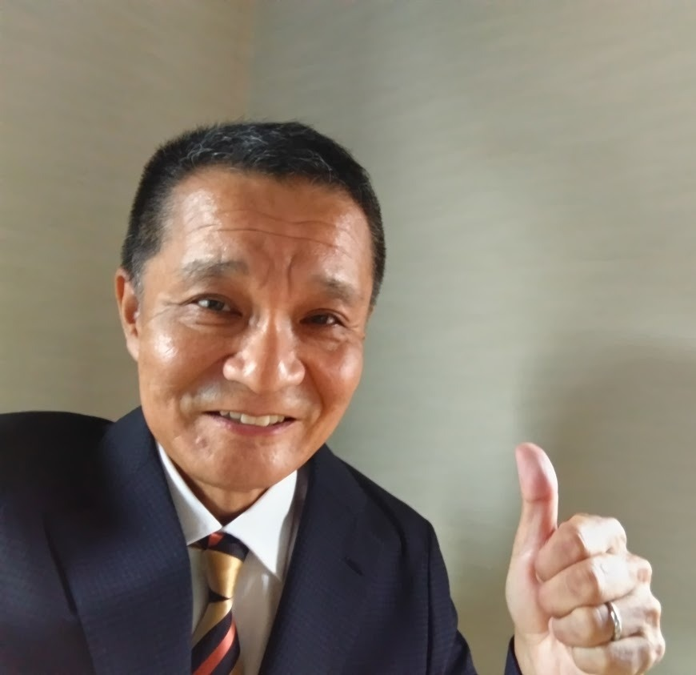

参加者のお声（リアルな変化）

渡邉さん（人を導くポジション）
「落ち込む期間が短縮され、行動スピードが劇的にUP」
【受講前】 気分の浮き沈みが激しく、感情に振り回されて思考が止まっていた。
【受講後】 AIを鏡にして自分の中の答えを見つけることで、行動スピードが上がり、フラットな状態へすぐ戻れるようになりました。
👉 コーチング業など、人を導く立場にいる人におすすめです。（自分が偏っていないかフラットに振り返る機会になります）

中屋さん（コーチ・コンサルタント）
「行動目標が明確になり、後回しの癖が解消！」
【受講前】 忙しさから、様々なことを後回しにしがちだった。
【受講後】 2週間に1度のペースで現状の問題に早期に向き合えるようになり、物事を後回しにする毎日の癖が改善されつつあります。
👉 忙しくて色んなことが後回しになっている人におすすめです。（やることが明確になります）

島田さん（新規事業立ち上げ）
「人に言えない悩みも吐き出せ、軌道修正が早くなった」
【受講前】 新しい活動の途中でモヤモヤしていたが、人に相談するのは恥ずかしかった。
【受講後】 AIカマヤンに気軽に打ち明けることで、自ら軌道修正の答えを導き出せるようになりました。
👉 新しい試みに迷いがある人、相談したいけれどリアルな人間には少し恥ずかしいと感じている人におすすめです。